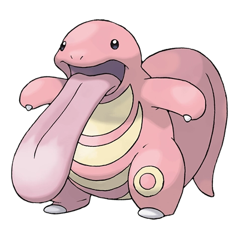

Назад
Ликитунг

Ликитунг — Покемон 1 поколения под номером 108 в Покедекс. Обитает он в регионе Канто и относится к Нормальному типу. Каждый новый встреченный предмет будет облизан Ликитунгом. Он делает это для запоминания вещей по текстуре и вкусу. Этого Покемона можно отпугнуть любыми кислыми вещами.
Тип:
Нормальный
Эволюция
# 108 Ликитунг